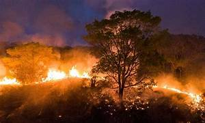

QUEIMADAS E SUAS CONSEQUENCIAS
1. Causas das Queimadas
Atividades Humanas: A expansão agrícola, o desmatamento ilegal e a construção de novas infraestruturas são as principais causas de queimadas induzidas pelo homem. Em muitas áreas, as queimadas são usadas como método para limpar terrenos para a agricultura.
Mudanças Climáticas: O aumento das temperaturas globais e as alterações nos padrões de precipitação criam condições mais propícias para incêndios florestais. Períodos prolongados de seca e eventos climáticos extremos tornam as florestas mais suscetíveis ao fogo.
Causas Naturais: Raios, erupções vulcânicas e outros fenômenos naturais também podem iniciar incêndios, embora sejam menos comuns em comparação às causas humanas.
2. Impactos Ambientais
Destruição de Habitats: Queimadas destroem grandes áreas de habitats naturais, colocando em risco a biodiversidade. Espécies de plantas e animais podem perder suas casas e até mesmo serem extintas.
Emissões de Gases de Efeito Estufa: Incêndios florestais liberam grandes quantidades de dióxido de carbono (CO2) e outros gases de efeito estufa, contribuindo para o aquecimento global.
Degradação do Solo: O fogo pode destruir a camada superior do solo, tornando-o menos fértil e mais suscetível à erosão.
3. Consequências para a Saúde Pública
Poluição do Ar: A fumaça das queimadas contém partículas finas e substâncias tóxicas que podem causar problemas respiratórios, cardiovasculares e outros problemas de saúde.
Deslocamento de Populações: Grandes incêndios podem forçar a evacuação de comunidades inteiras, causando deslocamentos temporários ou permanentes.
4. Impactos Econômicos
Perdas Agrícolas: As queimadas podem destruir plantações e pastagens, afetando a produção de alimentos e causando prejuízos econômicos para os agricultores.
Custos de Combate ao Fogo: Os esforços para controlar e extinguir incêndios florestais exigem recursos significativos, incluindo pessoal, equipamentos e tecnologias.
5. Medidas de Mitigação
Prevenção: Implementação de políticas rigorosas para evitar queimadas ilegais, promoção de práticas agrícolas sustentáveis e uso de técnicas de manejo do fogo controlado.
Monitoramento e Alerta: Utilização de tecnologias avançadas, como satélites e drones, para monitorar áreas vulneráveis e detectar incêndios precocemente.
Educação e Conscientização: Campanhas para educar o público sobre os riscos das queimadas e como prevenir incêndios.
Conclusão
O aumento das queimadas é uma questão complexa que requer uma abordagem multidisciplinar para ser eficazmente combatida. Governos, organizações não governamentais e comunidades locais precisam trabalhar juntos para implementar estratégias de prevenção e mitigação, protegendo o meio ambiente e as populações humanas dos impactos devastadores dos incêndios florestais.